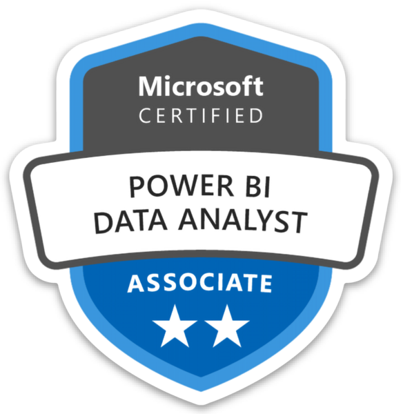
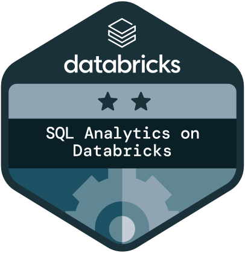

Freelance Financial Data Analyst
Built an NHS financial analytics pipeline (~2.1M records, 206 trusts) on a MySQL star schema, and published fda-toolkit, a Python package used by 1,000+ analysts monthly.
Financial Data Analyst & Chartered AccountantMicrosoft Certified: PL-300 & DP-900Power BI, SQL, Python, Microsoft Fabric
I enable finance teams to spend less time fixing data and more time using it.
About Me
I'm a Financial Data Analyst and ACA Chartered Accountant with over a decade of experience in financial reporting, FP&A and data analytics. My career began in traditional finance (month-end close, management reporting, budgeting, forecasting and board reporting), where I saw teams spend more time reconciling spreadsheets than analysing performance.
That led me into data analytics, not to leave finance, but to modernise it. Today I build Power BI semantic models, SQL data pipelines and Python-enabled financial workflows that make reporting reliable, scalable and auditable. I also built fda-toolkit, a Python package on PyPI with 67 financial data analysis functions.
Technical Stack
The tools I use to turn financial data into insight, and insight into decisions.
Portfolio
Finance-focused case studies spanning classical analytics, Power BI, and modern AI.
67 functions · 8 modules · reusable financial-data workflow
Python framework for automating financial data cleaning, validation, transformation, and audit logging. Eliminates manual reconciliation, broken schemas, and audit gaps—so analysts focus on insight, not data repair.
Analysts can spend most of their time cleaning, validating and reshaping data before any analysis begins. FDA Toolkit removes that work with 67 ready made functions in 8 modules, including one line pipelines that load, clean and check a finance file in a single step.
It understands finance specific details such as sign conventions, entity names and currency formats, records every operation in an audit trail, and is published on PyPI with full type hints and more than 1,000 downloads a month.
206 NHS trusts across 3 financial years · Python-to-MySQL ETL pipeline
Engineered end-to-end Python ETL pipeline ingesting NHS England financial data into MySQL star schema with analytical views, KPI metrics, and Power BI integration across 206 trusts.
Management Accounting · Forecasting · Variance Analysis
Designed forecasting models and variance analysis framework using Python — translating core management accounting skills into data-driven analytics with professional visualisations.
GOOGL · AMZN · AAPL · MSFT · Monte Carlo Simulation
Full portfolio risk analysis framework: daily returns, volatility computation, Sharpe ratio calculation, and 30-year Monte Carlo simulation for informed investment risk modelling.
CTEs · Window Functions · Data Quality Analysis
Advanced SQL analytics using CTEs, window functions, aggregations, and data quality frameworks — applied to student wellbeing analytics in Jupyter and MySQL.
29 DAX Measures · 5 KPI Domains · Enterprise Dashboard
Advanced Power BI model with 29 complex DAX measures tracking profitability, growth, efficiency, pricing, and risk metrics. Interactive dashboards with drill-through capabilities for business intelligence.
10-agent architecture · 21+ financial metrics · validated on Apple, Amazon & Colgate annual reports
Multi-agent AI platform that extracts and interprets financial statements — automated metrics and ratio calculation, evidence-linked risk and anomaly detection, and AI-generated executive commentary, with Python handling every calculation so results stay auditable.
1,299 indexed sections · 5 HMRC internal manuals · source-linked answers
Retrieval-augmented Q&A system that grounds UK tax answers in official HMRC internal manuals instead of an LLM's memory — every response traces back to the exact GOV.UK source page, or the system declines to answer.
More projects
Everything else I have built on GitHub, grouped by skill.
Career
Built an NHS financial analytics pipeline (~2.1M records, 206 trusts) on a MySQL star schema, and published fda-toolkit, a Python package used by 1,000+ analysts monthly.
Oversee £1M+ in donor funds with a clean audit record. Reserve forecasting now flags funding gaps six months ahead, and earlier budget approval unlocked £120K across 8 projects.
Improved forecast accuracy to ±8.5% on a £2.3M budget, cut Power BI load times 35%, reduced manual reporting requests 60% and identified £50K in annual savings.
Consolidated Sage and legacy data into Power BI models across 36 states: 55+ dashboards, 80+ DAX measures, and savings identified across 85 supplier contracts.
Credentials
Professional qualification and industry certifications behind my finance and analytics work.


Additional certifications
Associate Data Analyst in SQL (DataCamp) SQL (Advanced) (HackerRank) AI/BI for Data Analysts (Databricks)
Currently pursuing
Microsoft Certified: Fabric Analytics Engineer Associate (DP‑600)
Qualifications
Top 5% of cohort · HBS Excellence Award 2024 · Elected Student Representative
Built on the CFA Levels 1 & 2 curriculum. My dissertation applied quantitative financial analysis and data science to real-world financial data, combining Python-based statistical modelling with financial theory to produce actionable investment insights.
Key modules
Financial Data Analysis Financial Modelling Investment Banking Corporate Finance
Student Representative: gathered and analysed cohort feedback on teaching quality and course delivery, advocated cohort priorities to faculty and senior administrators, and drove measurable improvements to the learning experience.
Covered the core finance disciplines and provided the academic foundation for my ACA qualification and professional finance career.
Core areas
Financial Reporting Management Accounting Corporate Finance Investment Analysis
Get In Touch
Interested in discussing Finance Analytics, Data Engineering, Power BI implementation, or Python-based financial solutions? I'm based in the UK and available for immediate engagement.
Start a Conversation